② 創意敘事企劃SOS 專案標準色
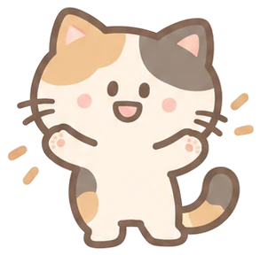
設計思維：把公告變成有劇情的事。同一個「快報名」可以是四格漫畫、倒數連發、節慶問候、延長加開；形式一直換，風格不變，而且有一條不變的規矩：日期、QR 碼、平台名稱這些行動資訊，每一張都要在。
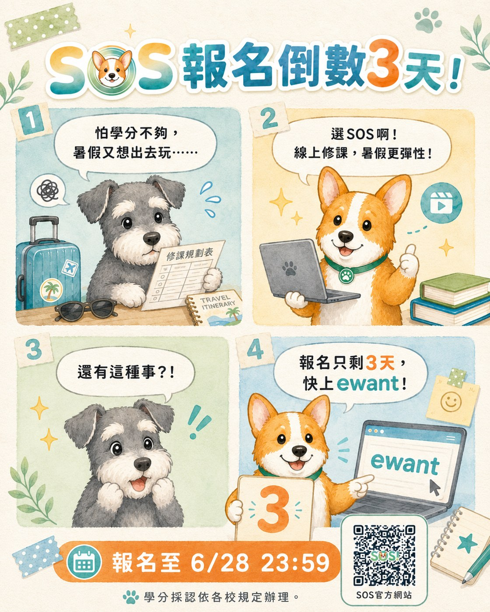
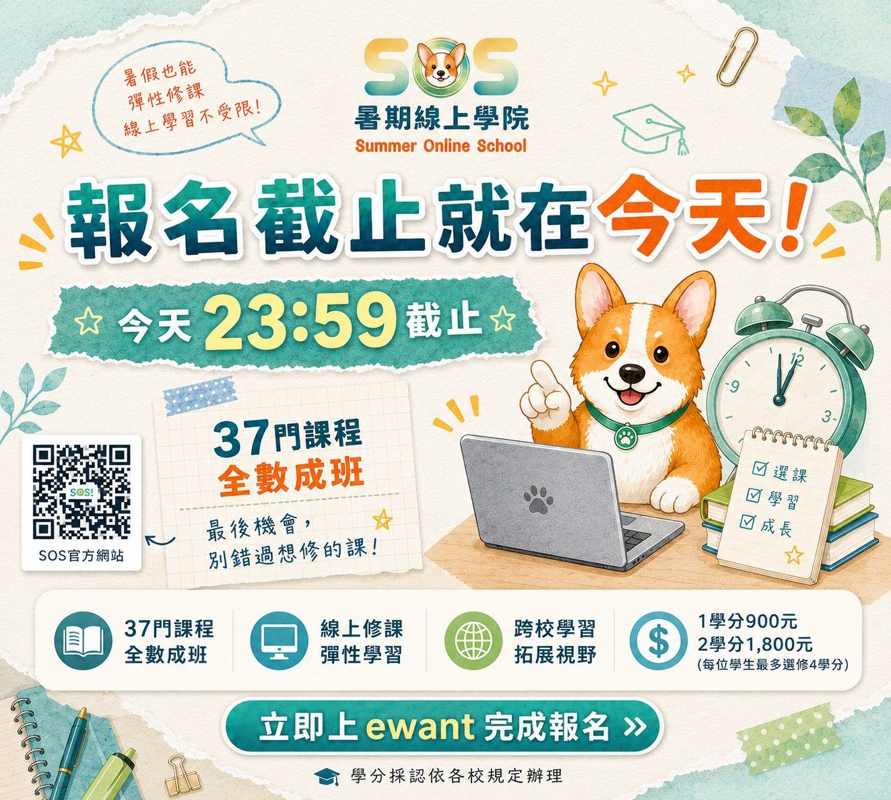
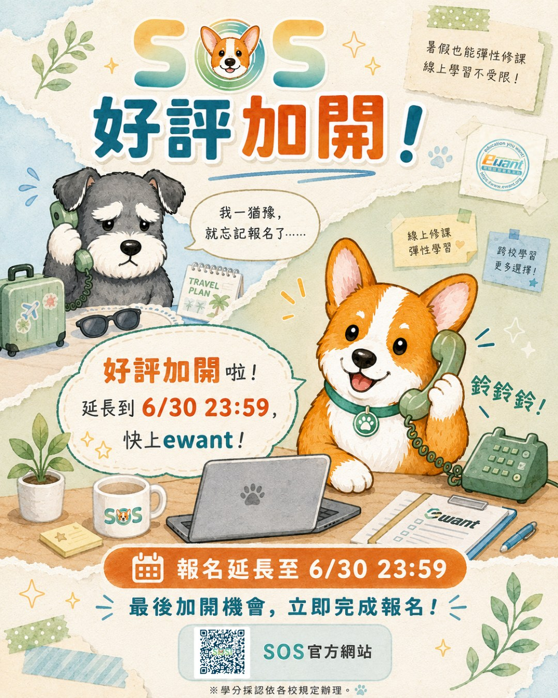
MARKETING × CONTENT｜行銷與內容
我喜歡用創意講行政：四格漫畫說故事、搭節慶做檔期、大活動配小活動（集點卡、運勢抽籤週邊），讓學生主動靠過來，而不是只發一張公告圖。同時我自己發展出一套「手繪溫暖拼貼風」：米白紙感的底、水彩暈染、兩隻吉祥物對戲，從預告、報名、倒數到開課指引走完一季。以下都是 SOS 暑期線上學院與 GDSC 社團實際發布過的文宣。

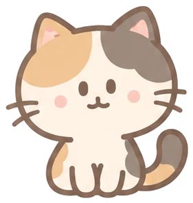
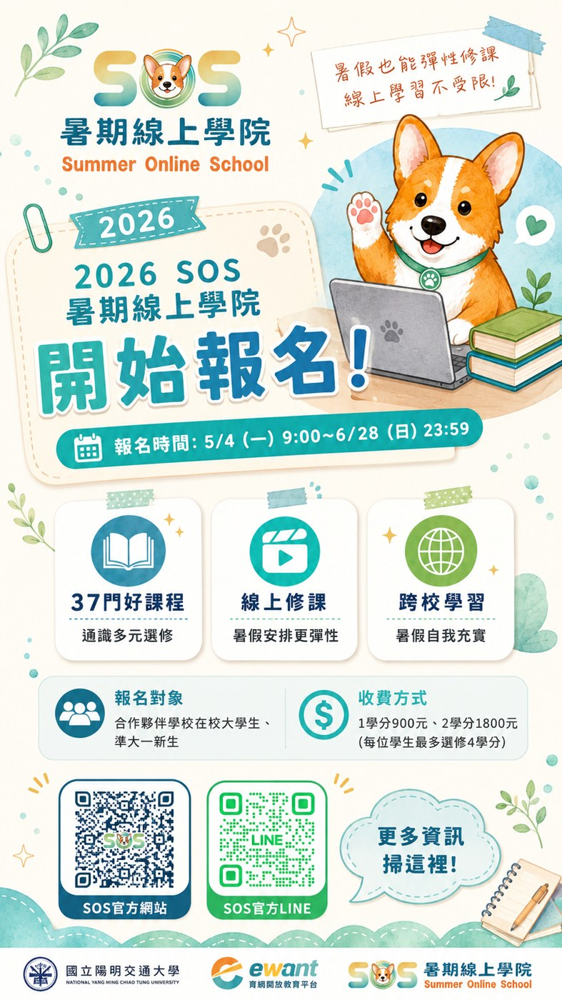
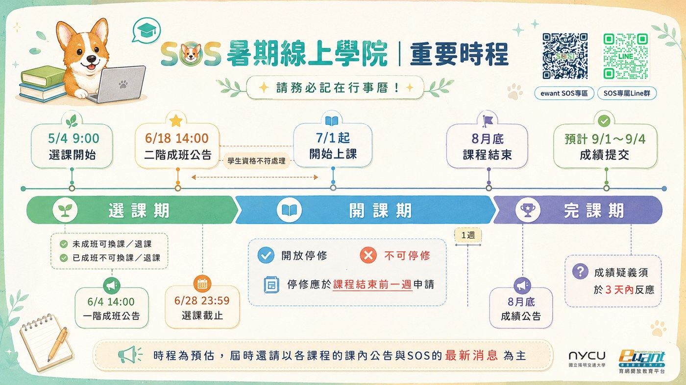




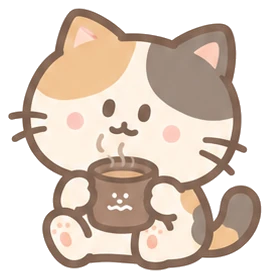
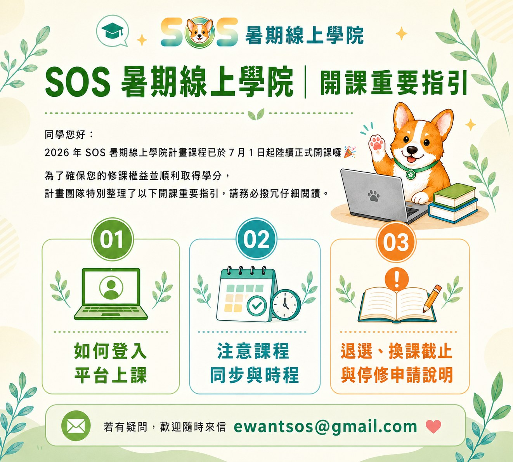
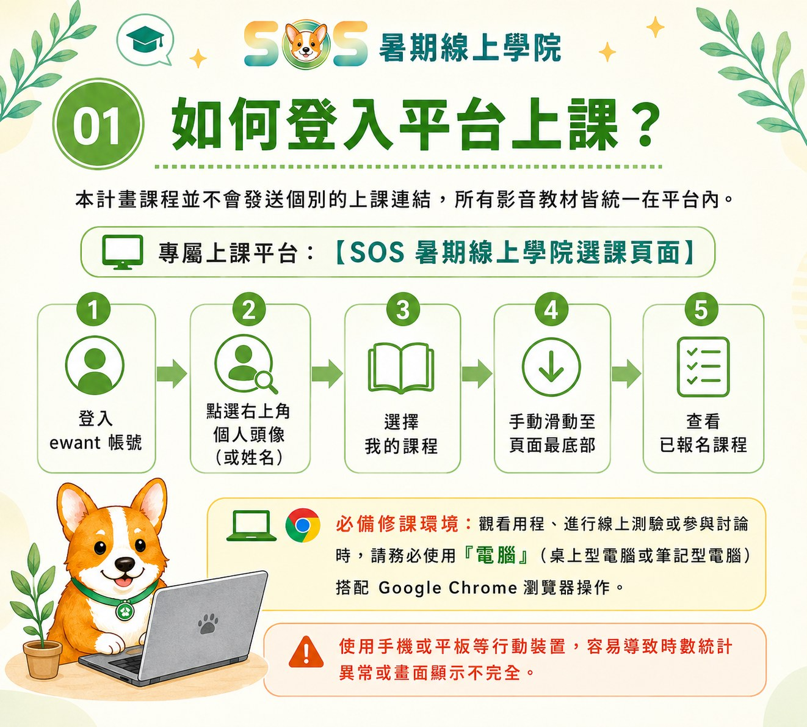
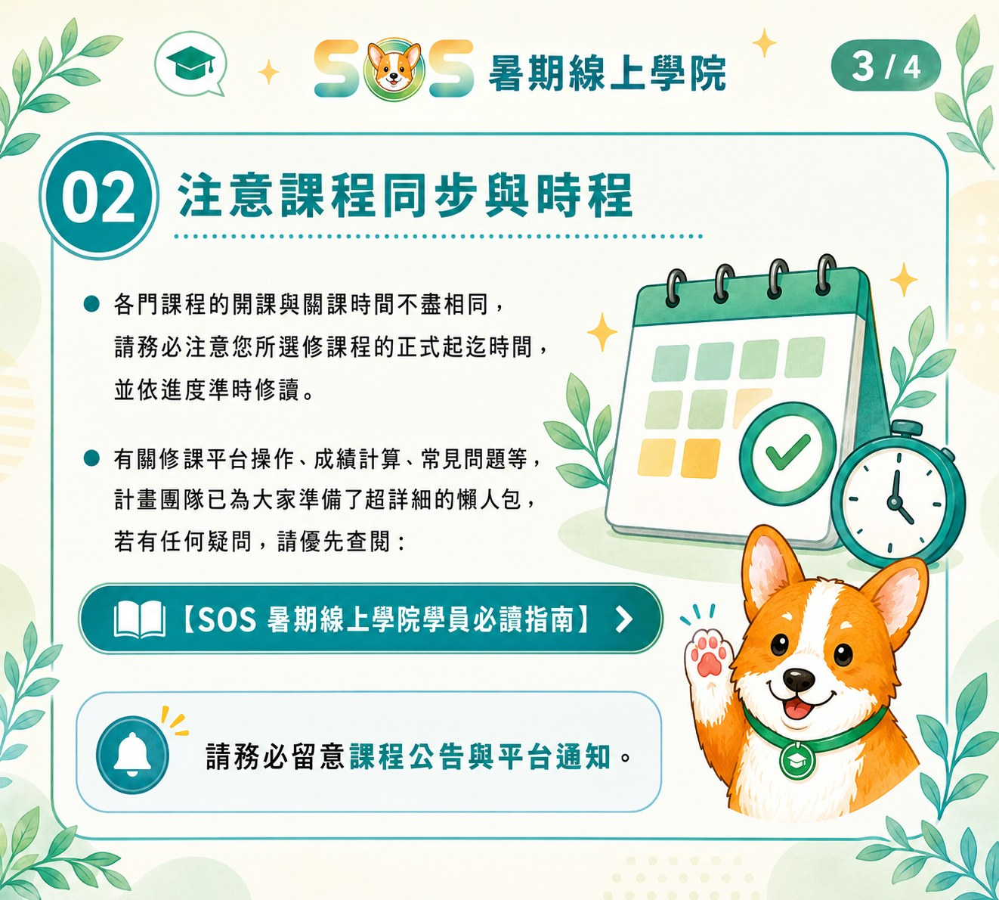
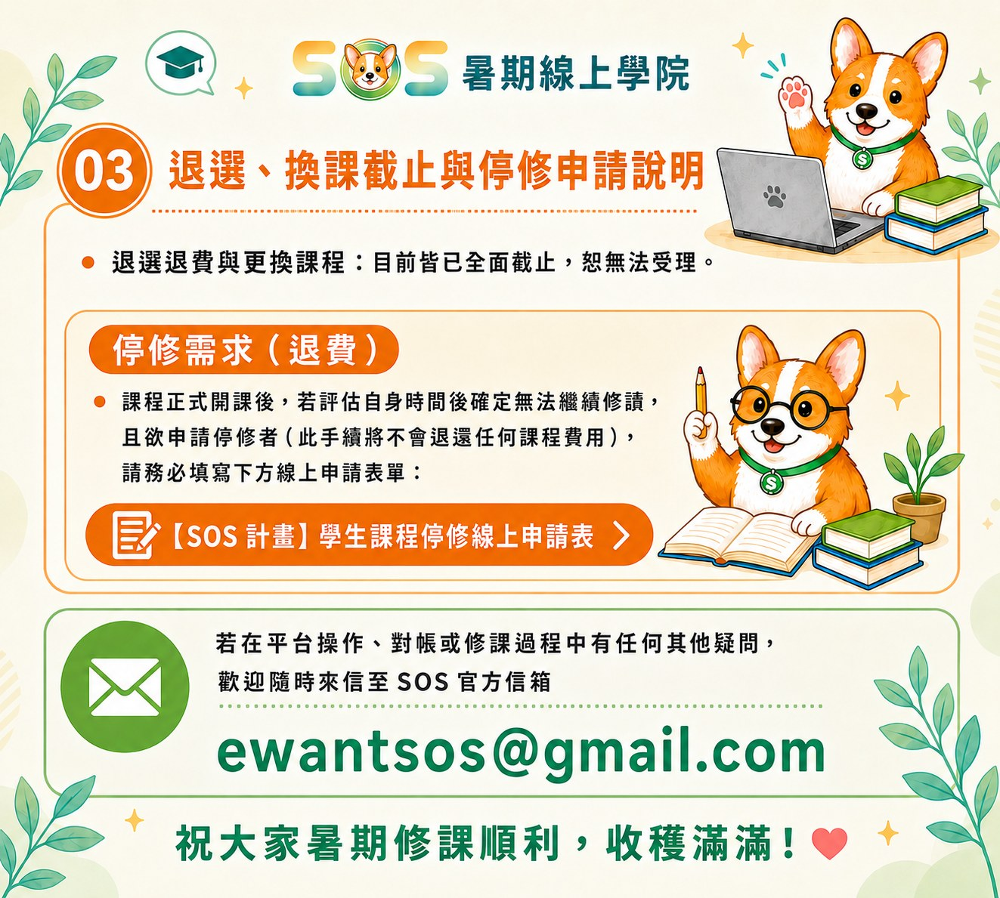
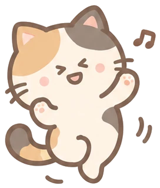
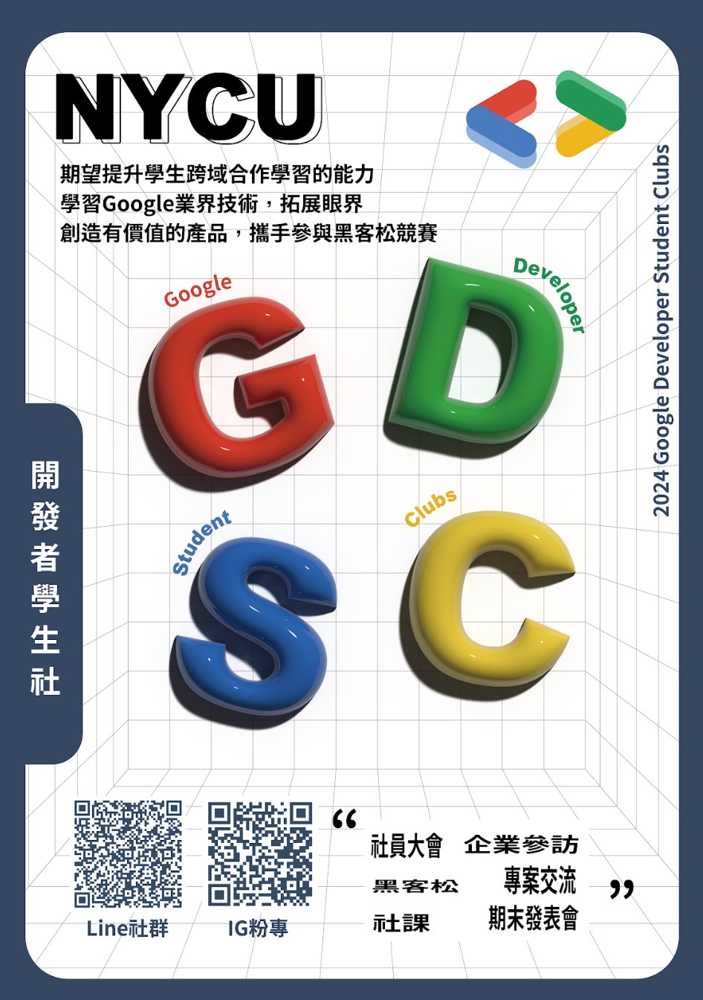
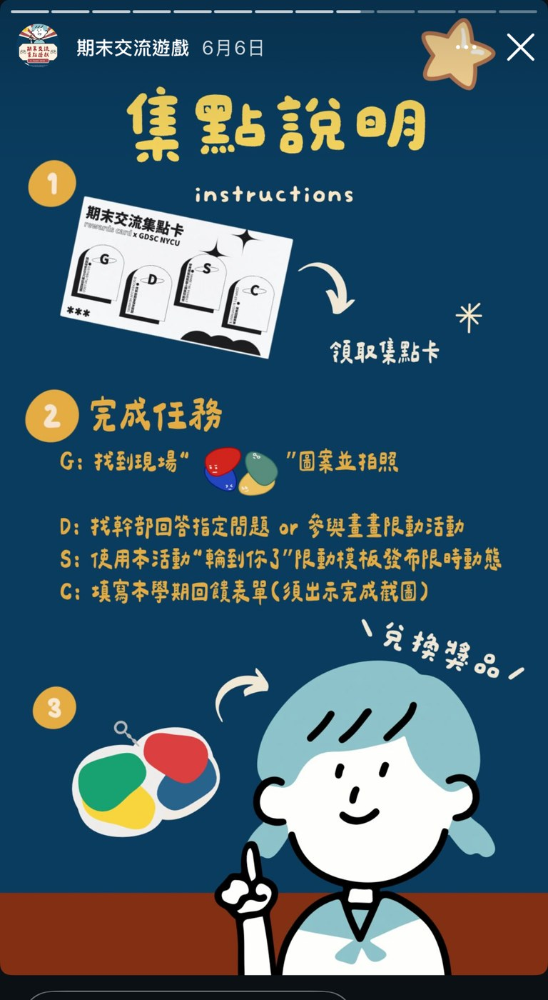
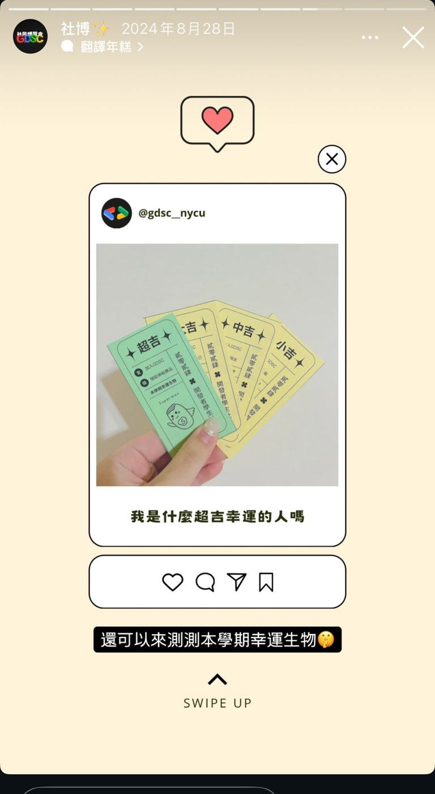
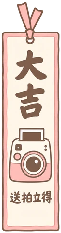
集點卡的四個任務逼人開口、逼人走動；籤要先打卡才能抽，抽到就換禮物。宣傳變成一場小遊戲，粉專追蹤才會從 351 長到 789。
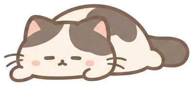
還在整理的作品：HTML 信件模板集（依信箱與對象分色系的 6 套）、預告期與心得徵稿等更多檔期系列、GDSC 短影音與編採學程粉專內容。素材去識別化後陸續補上。